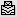

Sentaurus Visual
2. Visualizing 2D Structures
2.1 Overview
2.2 Viewing the Structure
2.3 Materials and Regions
2.4 Selecting Data Fields
2.5 Zooming and Panning
Objectives
- To introduce the basic controls of visualizing 2D structures in Sentaurus Visual.
2.1 Overview
In this section, you will work with a 2D structure and learn how to control the view of the structure, how to display and hide materials and regions, how to zoom and pan the structure, and how to display the mesh and boundaries. You also will learn how to change the view of the structure, and to zoom and pan the structure.
2.2 Viewing the Structure
To follow this section, download the following file by right-clicking and choosing Save Target As:
Figure 1 shows the new plot with device structure after the ldmos_des.tdr file has been loaded. This file is an output file of Sentaurus Device, representing a 2D LDMOS transistor structure and the corresponding solution variables stored on the final element mesh.
{kind=link}
Figure 1. Device structure after ldmos_des.tdr file has been loaded. (Click image for full-size view.)
When loading a TDR file, Sentaurus Visual:
- Draws the device structure in a new frame in the plot area. The file name of the loaded structure without extension is displayed at the top of the plot. This is the dataset name.
- Displays the materials and regions on the Materials and Regions tabs of the Data Selection panel.
- Displays the solution variables from the data file on the Scalars tab of the Data Selection panel. By default, Sentaurus Visual draws the contour bands of doping concentration in the structure.
2.3 Materials and Regions
Two-dimensional or 3D plots are composed of materials that are distributed in regions. The Data Selection Panel provides a list of materials present in the structure and allows you to control how these materials are rendered.
The tabs in the Data Selection panel are:
- The Materials tab controls how materials are displayed in the plot area.
- The Regions tab controls how regions are displayed in the plot area.
- The Lines/Particles tab controls how contacts are rendered and how special lines, such as p-n junction and depletion region boundaries, are displayed.
Figure 2. Data Selection panel.
In the Data Selection panel, the icons at the top of the Materials and Regions tabs control specifically how materials are rendered.
| Icon | Description |
|---|---|
| Shows or hides the bulk. | |
| Shows or hides the contour fields. | |
| Shows or hides the mesh. | |
| Shows or hides the borders. | |
| Switches on or switches off translucency. |
Clicking the icon itself shows or hides the specified property for all materials or regions in the active plot. However, selecting the check box next to a material or region name shows or hides the specified property only for that material or region. For example, clearing the check box in the second column for the material "Oxide" would switch off contour fields only in the material Oxide (see Figure 3).
Figure 3. Data Selection panel for materials, showing the cleared check box to hide contour fields in the material Oxide only.
2.4 Selecting Data Fields
The lower part of the Data Selection panel is where you can control how data fields are displayed. Both scalar and vector plots can be displayed in Sentaurus Visual. To create a contour plot, select the required property to be plotted on the Scalars tab. The range and levels are set automatically, but they can be customized using the Range and Levels tabs.
To better understand how data-field plotting is controlled, here is an example with instructions to plot the impact ionization rate and the current flowlines at breakdown:
- Download the LDMOS structure by right-clicking the link here and choosing
Save Target As:
- Load the file ldmos_des.tdr (see Section 1.3 Loading Data Files).
- On the Scalars tab, select the ImpactIonization field from the list.
- For the ImpactIonization field, select the check box in the first column
for contour fields
.
Colored contour bands for the impact ionization rate are shown. The range is determined automatically, and logarithmic interpolation is chosen following the specification in the datexcodes.txt file. - With the ImpactIonization field highlighted, change the range on the Range tab. In the first text box, set the minimum level to 1. In the second text box, set the maximum to 1e24.
- On the Scalars tab, select the CurrentPotential field from the list.
- For the CurrentPotential field, select the check box in the second column for
contour lines .
Thin black isolines of current potential are plotted on top of the colored contour fields of impact ionization. By default, Sentaurus Visual plots 31 contour lines. - With CurrentPotential field selected, click the Levels tab.
Change the number of levels from 31 to 11, and press the Enter key.
By plotting 11 equally spaced contour levels for CurrentPotential, you can observe 10% of the conduction current flowing between every two neighboring flowlines. - Zoom into the area where the ImpactIonization rate is high by clicking .
Figure 4 shows the impact ionization contour fields and current flowlines plotted near the LDMOS field oxide after magnification.
{kind=link}
Figure 4. ImpactIonization and CurrentPotential plot in LDMOS transistor at breakdown. (Click image for full-size view.)
2.5 Zooming and Panning
To take a closer look at significant details on a plot, there are various ways to zoom. On a selected plot, you can zoom using the mouse wheel, or by clicking the middle mouse button and moving to the top or bottom of the screen.
To pan, drag while holding the right mouse button.
2.5.1 Zoom Tool
The zoom tool magnifies a particular area of a plot. To select the zoom tool:
- Click the toolbar button.
- Drag to draw a rectangle over the area you want to magnify.
2.5.2 Reset Tool
The reset tool  restores the selected plot position
and zoom level. It does not restore the rotation on 3D plots.
restores the selected plot position
and zoom level. It does not restore the rotation on 3D plots.
Copyright © 2022 Synopsys, Inc. All rights reserved.